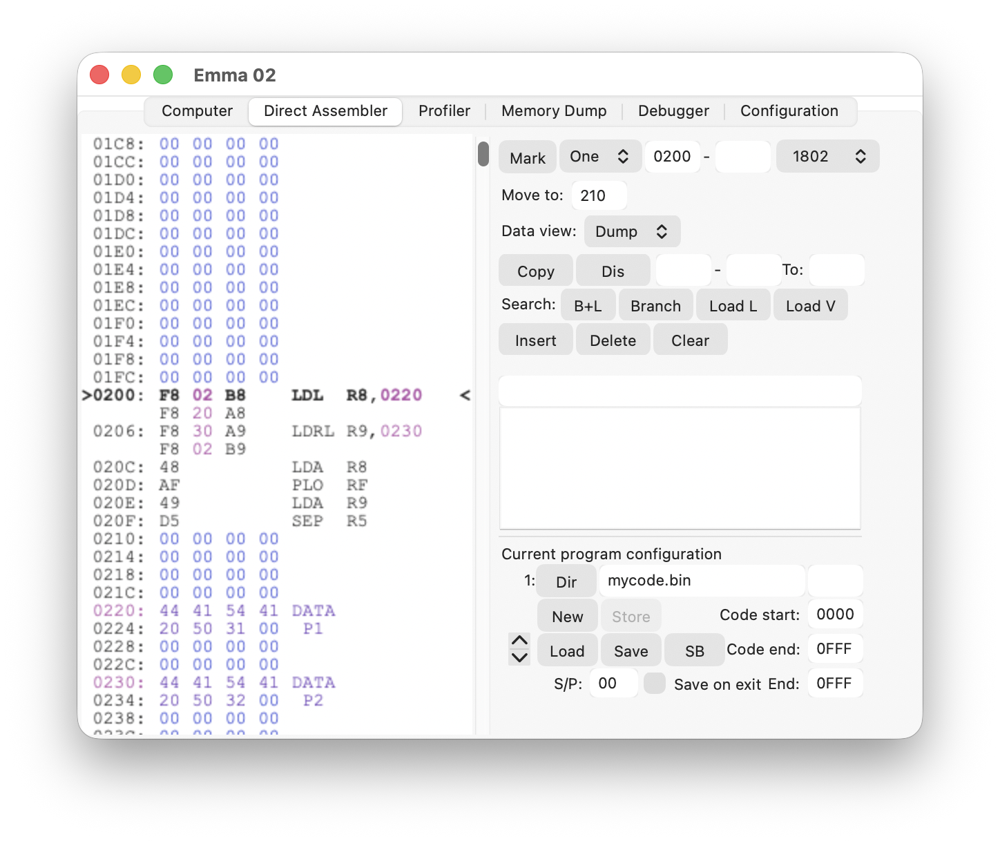
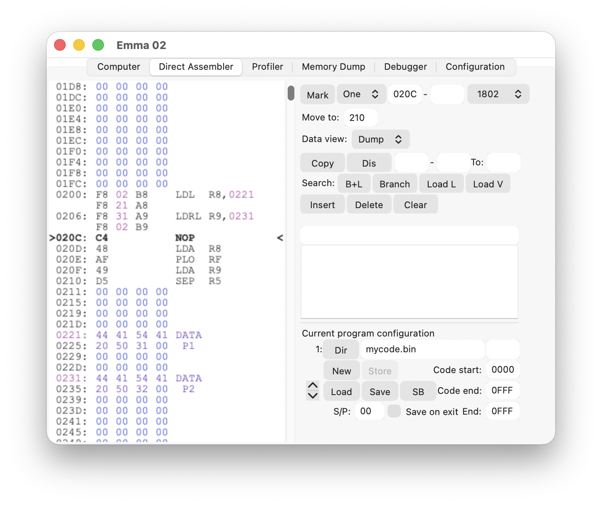
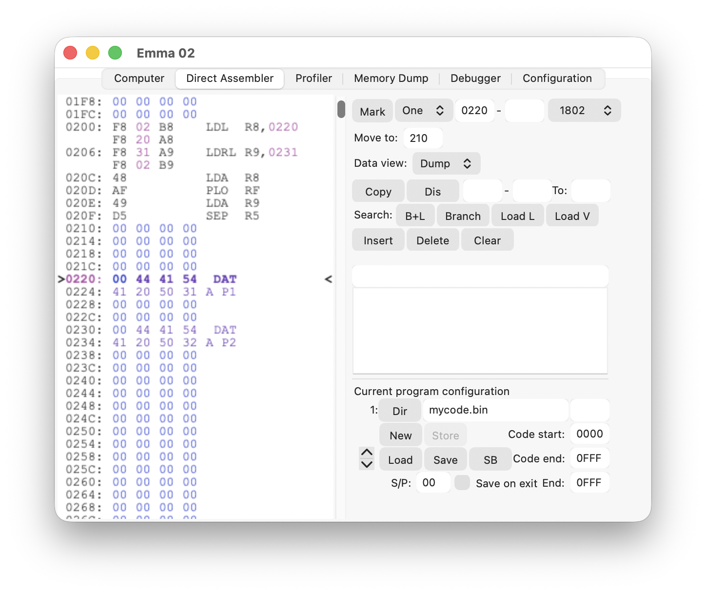
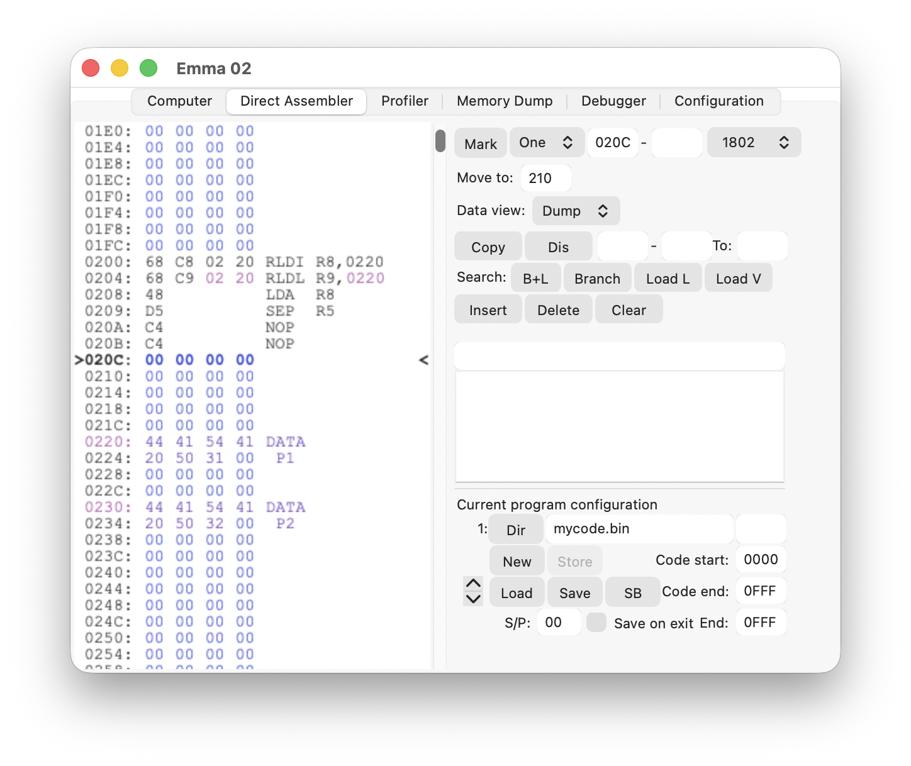
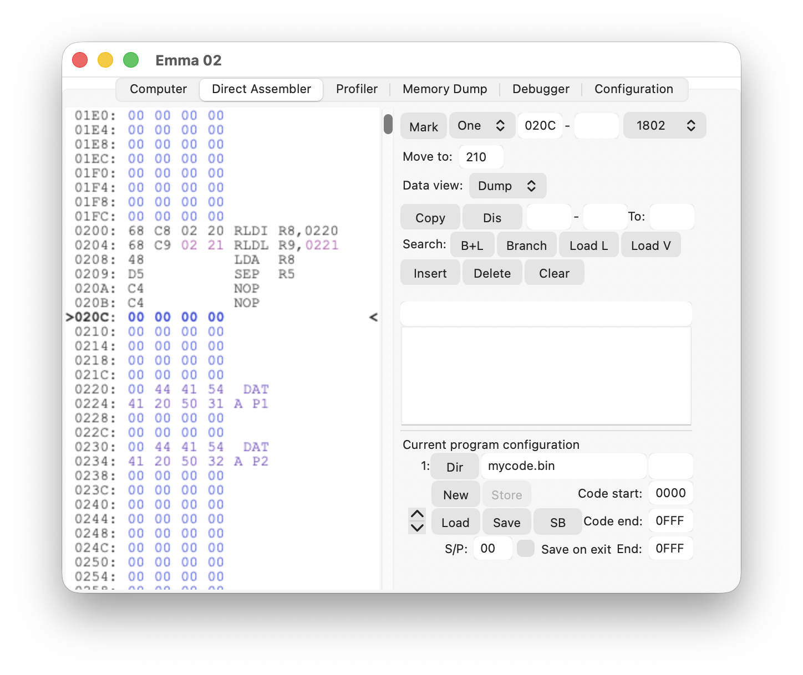

Some code will need to load locations into registers and use the location in the register to load data. This can be done by using the LDL (LoaD Location) or LDRL (LoaD Reversed Location) macro in the Direct Assembler, or by marking specific 1802 code as LDL or LDRL via the procedure described in the Memory Type Selection section.
By doing this, the location data will be corrected when using insert, delete or copy commands. All location data will be shown in purple text.
Use LDL for code loading the high byte first and LDRL for code loading the low byte first:

For example, inserting at address 020C (hexadecimal) in the code above will result in:

If an insert is made at address 0220 (hexadecimal) in the original example, the LDL at 0200 (hexadecimal) will not change. This allows adding space at the start of a data section, as shown in the example below:

A similar LDV (LoaD Value) macro is available, resulting in the same 1802 code sequence; however, for this macro the value is not changed by any insert, delete or copy commands. LDV data values are shown in the default text colour, not in purple.
For use with 1804 or 1805 code, an RLDL macro is available. RLDL will generate the same 1804/1805 code as the 1804/1805 instruction RLDI; however, the Direct Assembler will treat RLDL as a location load similar to LDL. The RLDL data value is shown in purple; the RLDI data is not.
For example, inserting at address 020C (hexadecimal) in the code below:

will result in:

Note: The RLDL value changed to 0221 (hexadecimal) whereas the RLDI value stayed the same.